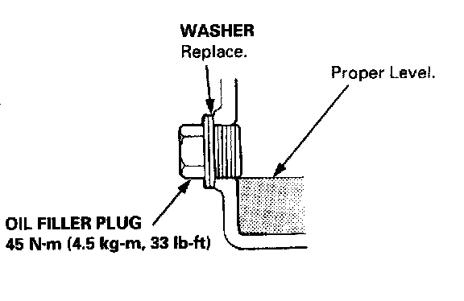
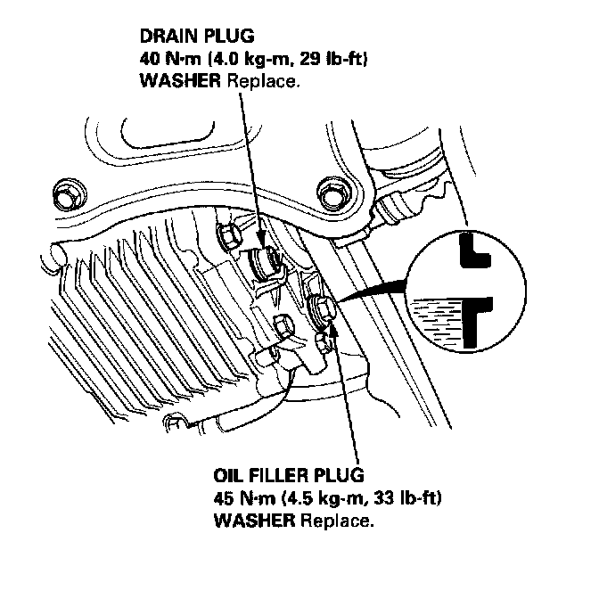

Fluid - Differential: Service and Repair
NOTE:Check the oil with engine OFF, and the car on level ground.
1. Remove the oil filler plug, then check the level and condition of the oil.

2. The oil level must be up to the fill hole. If it is below the hole, add oil until it runs out, then reinstall the oil filler plug with a new washer.
3. If the differential oil is dirty, remove the drain plug and drain the oil.
4. Reinstall the drain plug with a new washer, and refill the differential oil to the proper level.
NOTE: The drain plug washer should be replaced at every oil change.

5. Reinstall the oil filler plug with a new washer.
Oil Capacity:
- 1.05L (1.11 US qt, 0.92 Imp qt) at oil change.
- 1.10L (1.16 US qt, 0.97 Imp qt) at overhaul.
Recommended oil:
- Hypoid gear oil API Classification GL4 or GL5
Viscosity:
- SAE 90 above 0F (-18 C)
- SAE 80 or SAE 80W 90 below 0°F (-18 C)